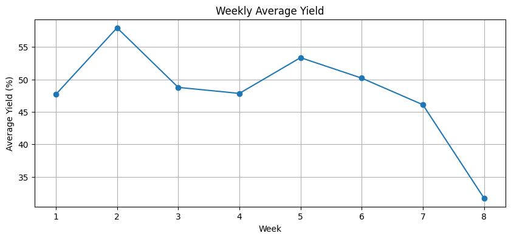

Module 03: Intermediate Pandas#
Advanced data manipulation techniques for real-world data analysis.
Learning Objectives#
Use groupby for split-apply-combine operations
Merge and join DataFrames
Reshape data with pivot and melt
Apply custom functions efficiently
Work with datetime data
import pandas as pd
import numpy as np
import matplotlib.pyplot as plt
# Load experiments dataset
import pandas as pd
url = course_file('data/experiments_intermediate.csv')
experiments = pd.read_csv(url, parse_dates=['date'])
print(f"Dataset shape: {experiments.shape}")
experiments.head()
Dataset shape: (50, 8)
| experiment_id | date | catalyst | temperature | pressure | conversion | selectivity | yield | |
|---|---|---|---|---|---|---|---|---|
| 0 | EXP001 | 2024-01-01 | Ru/Al2O3 | 350 | 4.1 | 0.832 | 0.893 | 74.3 |
| 1 | EXP002 | 2024-01-02 | Pt/Al2O3 | 300 | 1.3 | 0.859 | 0.808 | 69.4 |
| 2 | EXP003 | 2024-01-03 | Ru/Al2O3 | 350 | 2.4 | 0.305 | 0.962 | 29.3 |
| 3 | EXP004 | 2024-01-04 | Ru/Al2O3 | 500 | 1.5 | 0.632 | 0.739 | 46.7 |
| 4 | EXP005 | 2024-01-05 | Pt/Al2O3 | 350 | 4.5 | 0.571 | 0.795 | 45.4 |
GroupBy: The Split-Apply-Combine Pattern#
GroupBy is arguably the most powerful Pandas operation. It lets you answer questions like:
“What’s the average yield for each catalyst?”
“What’s the best-performing temperature for each reactor?”
“How does conversion vary by day of week?”
The Mental Model: Split-Apply-Combine#
Split: Divide data into groups based on one or more columns
Apply: Perform some operation on each group
Combine: Combine results back into a DataFrame
This is the Pandas equivalent of SQL’s GROUP BY, but more flexible.
When to Use GroupBy#
Comparing performance across categories (catalysts, reactors, operators)
Aggregating replicate experiments
Computing statistics within subgroups
Normalizing data within groups
# Basic groupby: mean by catalyst
experiments.groupby('catalyst')['yield'].mean()
catalyst
Pd/Al2O3 46.633333
Pt/Al2O3 49.206667
Ru/Al2O3 52.880000
Name: yield, dtype: float64
# Multiple aggregations
experiments.groupby('catalyst')['yield'].agg(['mean', 'std', 'min', 'max', 'count'])
| mean | std | min | max | count | |
|---|---|---|---|---|---|
| catalyst | |||||
| Pd/Al2O3 | 46.633333 | 12.843490 | 25.9 | 67.2 | 15 |
| Pt/Al2O3 | 49.206667 | 15.956703 | 29.4 | 78.3 | 15 |
| Ru/Al2O3 | 52.880000 | 17.198519 | 26.7 | 81.9 | 20 |
# Group by multiple columns
experiments.groupby(['catalyst', 'temperature'])['yield'].mean().unstack()
| temperature | 300 | 350 | 400 | 450 | 500 |
|---|---|---|---|---|---|
| catalyst | |||||
| Pd/Al2O3 | 31.80 | 40.250000 | 44.466667 | 56.200000 | 46.15 |
| Pt/Al2O3 | 47.84 | 50.766667 | NaN | 52.383333 | 32.30 |
| Ru/Al2O3 | 45.30 | 55.540000 | 42.950000 | 50.933333 | 60.00 |
# Different aggregations for different columns
experiments.groupby('catalyst').agg({
'conversion': 'mean',
'selectivity': 'mean',
'yield': ['mean', 'std'],
'experiment_id': 'count'
})
| conversion | selectivity | yield | experiment_id | ||
|---|---|---|---|---|---|
| mean | mean | mean | std | count | |
| catalyst | |||||
| Pd/Al2O3 | 0.575133 | 0.819733 | 46.633333 | 12.843490 | 15 |
| Pt/Al2O3 | 0.578400 | 0.843467 | 49.206667 | 15.956703 | 15 |
| Ru/Al2O3 | 0.625400 | 0.854450 | 52.880000 | 17.198519 | 20 |
# Named aggregations (cleaner column names)
summary = experiments.groupby('catalyst').agg(
n_experiments=('experiment_id', 'count'),
mean_yield=('yield', 'mean'),
std_yield=('yield', 'std'),
max_yield=('yield', 'max')
).round(2)
summary
| n_experiments | mean_yield | std_yield | max_yield | |
|---|---|---|---|---|
| catalyst | ||||
| Pd/Al2O3 | 15 | 46.63 | 12.84 | 67.2 |
| Pt/Al2O3 | 15 | 49.21 | 15.96 | 78.3 |
| Ru/Al2O3 | 20 | 52.88 | 17.20 | 81.9 |
# Custom aggregation function
def yield_range(x):
return x.max() - x.min()
experiments.groupby('catalyst')['yield'].agg(['mean', yield_range])
| mean | yield_range | |
|---|---|---|
| catalyst | ||
| Pd/Al2O3 | 46.633333 | 41.3 |
| Pt/Al2O3 | 49.206667 | 48.9 |
| Ru/Al2O3 | 52.880000 | 55.2 |
Merging DataFrames: Combining Data Sources#
Real analysis often requires combining data from multiple sources:
Experiment results + catalyst properties
Sensor readings + equipment specifications
Lab data + literature values
The Four Types of Merges#
Type |
What It Keeps |
Use When |
|---|---|---|
|
Only matching rows |
You only want complete records |
|
All rows from left table |
Your main table is on the left, reference data on right |
|
All rows from right table |
Your main table is on the right |
|
All rows from both |
You want to see what’s missing |
The Key Concept: Join Keys#
The on parameter specifies which column(s) to match. Make sure:
The columns have the same meaning in both tables
Values are comparable (watch out for “Pt” vs “Pt/Al2O3”)
Missing keys are handled appropriately (check for NaN after merge)
# Load catalyst properties reference table
url = course_file('data/catalyst_info.csv')
catalyst_info = pd.read_csv(url)
catalyst_info
| catalyst | metal_loading | surface_area | cost_per_kg | |
|---|---|---|---|---|
| 0 | Pt/Al2O3 | 1.0 | 250 | 50000 |
| 1 | Pd/Al2O3 | 0.5 | 280 | 30000 |
| 2 | Ru/Al2O3 | 2.0 | 220 | 8000 |
| 3 | Rh/Al2O3 | 0.3 | 300 | 80000 |
# Merge experiments with catalyst info
merged = experiments.merge(catalyst_info, on='catalyst', how='left')
merged.head()
| experiment_id | date | catalyst | temperature | pressure | conversion | selectivity | yield | metal_loading | surface_area | cost_per_kg | |
|---|---|---|---|---|---|---|---|---|---|---|---|
| 0 | EXP001 | 2024-01-01 | Ru/Al2O3 | 350 | 4.1 | 0.832 | 0.893 | 74.3 | 2.0 | 220 | 8000 |
| 1 | EXP002 | 2024-01-02 | Pt/Al2O3 | 300 | 1.3 | 0.859 | 0.808 | 69.4 | 1.0 | 250 | 50000 |
| 2 | EXP003 | 2024-01-03 | Ru/Al2O3 | 350 | 2.4 | 0.305 | 0.962 | 29.3 | 2.0 | 220 | 8000 |
| 3 | EXP004 | 2024-01-04 | Ru/Al2O3 | 500 | 1.5 | 0.632 | 0.739 | 46.7 | 2.0 | 220 | 8000 |
| 4 | EXP005 | 2024-01-05 | Pt/Al2O3 | 350 | 4.5 | 0.571 | 0.795 | 45.4 | 1.0 | 250 | 50000 |
# Different merge types
# how='left' - Keep all rows from left DataFrame
# how='right' - Keep all rows from right DataFrame
# how='inner' - Keep only matching rows (intersection)
# how='outer' - Keep all rows from both (union)
# Example: inner merge (Rh/Al2O3 exists in catalyst_info but not in experiments)
inner_merge = experiments.merge(catalyst_info, on='catalyst', how='inner')
print(f"Left: {len(experiments)}, Right: {len(catalyst_info)}, Inner: {len(inner_merge)}")
Left: 50, Right: 4, Inner: 50
Reshaping Data: Pivot and Melt#
Data comes in different “shapes,” and sometimes you need to reshape it:
Long vs Wide Format#
Long format (tidy data):
Each row is one observation
Good for analysis and plotting
Example: Each row = (catalyst, temperature, yield)
Wide format (spreadsheet-style):
Columns represent different conditions
Easier for humans to read
Example: Rows = catalysts, Columns = temperatures, Values = yields
When to Use Which#
Format |
Use For |
|---|---|
Long |
Most Pandas operations, plotting, ML |
Wide |
Display tables, Excel export, certain visualizations |
The Transformation Tools#
pivot_table(): Long → Wide (aggregate if needed)melt(): Wide → Long (unpivot)
# Pivot: long to wide format
# Create summary table: catalysts as rows, temperatures as columns
pivot_table = experiments.pivot_table(
values='yield',
index='catalyst',
columns='temperature',
aggfunc='mean'
).round(1)
pivot_table
| temperature | 300 | 350 | 400 | 450 | 500 |
|---|---|---|---|---|---|
| catalyst | |||||
| Pd/Al2O3 | 31.8 | 40.2 | 44.5 | 56.2 | 46.2 |
| Pt/Al2O3 | 47.8 | 50.8 | NaN | 52.4 | 32.3 |
| Ru/Al2O3 | 45.3 | 55.5 | 43.0 | 50.9 | 60.0 |
# Multiple values in pivot
pivot_multi = experiments.pivot_table(
values=['conversion', 'selectivity'],
index='catalyst',
columns='temperature',
aggfunc='mean'
).round(2)
pivot_multi
| conversion | selectivity | |||||||||
|---|---|---|---|---|---|---|---|---|---|---|
| temperature | 300 | 350 | 400 | 450 | 500 | 300 | 350 | 400 | 450 | 500 |
| catalyst | ||||||||||
| Pd/Al2O3 | 0.45 | 0.44 | 0.59 | 0.68 | 0.61 | 0.70 | 0.90 | 0.76 | 0.84 | 0.76 |
| Pt/Al2O3 | 0.58 | 0.58 | NaN | 0.62 | 0.36 | 0.82 | 0.88 | NaN | 0.84 | 0.90 |
| Ru/Al2O3 | 0.54 | 0.66 | 0.47 | 0.61 | 0.71 | 0.85 | 0.84 | 0.89 | 0.86 | 0.85 |
# Melt: wide to long format
# Useful when data is in "spreadsheet" format
wide_data = pd.DataFrame({
'catalyst': ['Pt', 'Pd', 'Ru'],
'yield_300K': [45, 42, 38],
'yield_400K': [65, 62, 55],
'yield_500K': [78, 75, 68]
})
print("Wide format:")
print(wide_data)
# Convert to long format
long_data = wide_data.melt(
id_vars='catalyst',
var_name='condition',
value_name='yield'
)
print("\nLong format:")
print(long_data)
Wide format:
catalyst yield_300K yield_400K yield_500K
0 Pt 45 65 78
1 Pd 42 62 75
2 Ru 38 55 68
Long format:
catalyst condition yield
0 Pt yield_300K 45
1 Pd yield_300K 42
2 Ru yield_300K 38
3 Pt yield_400K 65
4 Pd yield_400K 62
5 Ru yield_400K 55
6 Pt yield_500K 78
7 Pd yield_500K 75
8 Ru yield_500K 68
Apply and Transform#
# Apply a function to each row
def categorize_yield(row):
if row['yield'] >= 70:
return 'high'
elif row['yield'] >= 50:
return 'medium'
else:
return 'low'
experiments['yield_category'] = experiments.apply(categorize_yield, axis=1)
experiments[['experiment_id', 'yield', 'yield_category']].head(10)
| experiment_id | yield | yield_category | |
|---|---|---|---|
| 0 | EXP001 | 74.3 | high |
| 1 | EXP002 | 69.4 | medium |
| 2 | EXP003 | 29.3 | low |
| 3 | EXP004 | 46.7 | low |
| 4 | EXP005 | 45.4 | low |
| 5 | EXP006 | 32.5 | low |
| 6 | EXP007 | 36.3 | low |
| 7 | EXP008 | 49.1 | low |
| 8 | EXP009 | 70.5 | high |
| 9 | EXP010 | 45.1 | low |
# Transform: apply function but keep original shape
# Useful for normalization within groups
# Z-score normalization of yield within each catalyst group
experiments['yield_zscore'] = experiments.groupby('catalyst')['yield'].transform(
lambda x: (x - x.mean()) / x.std()
)
experiments[['experiment_id', 'catalyst', 'yield', 'yield_zscore']].head(10)
| experiment_id | catalyst | yield | yield_zscore | |
|---|---|---|---|---|
| 0 | EXP001 | Ru/Al2O3 | 74.3 | 1.245456 |
| 1 | EXP002 | Pt/Al2O3 | 69.4 | 1.265508 |
| 2 | EXP003 | Ru/Al2O3 | 29.3 | -1.371048 |
| 3 | EXP004 | Ru/Al2O3 | 46.7 | -0.359333 |
| 4 | EXP005 | Pt/Al2O3 | 45.4 | -0.238562 |
| 5 | EXP006 | Pt/Al2O3 | 32.5 | -1.047000 |
| 6 | EXP007 | Ru/Al2O3 | 36.3 | -0.964037 |
| 7 | EXP008 | Pd/Al2O3 | 49.1 | 0.192056 |
| 8 | EXP009 | Ru/Al2O3 | 70.5 | 1.024507 |
| 9 | EXP010 | Ru/Al2O3 | 45.1 | -0.452365 |
Working with Dates#
# Extract date components
experiments['year'] = experiments['date'].dt.year
experiments['month'] = experiments['date'].dt.month
experiments['week'] = experiments['date'].dt.isocalendar().week
experiments['day_of_week'] = experiments['date'].dt.day_name()
experiments[['date', 'year', 'month', 'week', 'day_of_week']].head()
| date | year | month | week | day_of_week | |
|---|---|---|---|---|---|
| 0 | 2024-01-01 | 2024 | 1 | 1 | Monday |
| 1 | 2024-01-02 | 2024 | 1 | 1 | Tuesday |
| 2 | 2024-01-03 | 2024 | 1 | 1 | Wednesday |
| 3 | 2024-01-04 | 2024 | 1 | 1 | Thursday |
| 4 | 2024-01-05 | 2024 | 1 | 1 | Friday |
# Group by time period
weekly_avg = experiments.groupby('week')['yield'].mean()
plt.figure(figsize=(10, 4))
weekly_avg.plot(kind='line', marker='o')
plt.xlabel('Week')
plt.ylabel('Average Yield (%)')
plt.title('Weekly Average Yield')
plt.grid(True)
plt.show()

# Resample time series data
experiments_ts = experiments.set_index('date')
# Weekly average
weekly = experiments_ts['yield'].resample('W').mean()
print(weekly)
date
2024-01-07 47.700000
2024-01-14 57.957143
2024-01-21 48.771429
2024-01-28 47.842857
2024-02-04 53.357143
2024-02-11 50.200000
2024-02-18 46.100000
2024-02-25 31.700000
Freq: W-SUN, Name: yield, dtype: float64
Method Chaining#
Combine operations elegantly.
# Instead of step-by-step:
# df1 = experiments[experiments['temperature'] >= 400]
# df2 = df1.groupby('catalyst')['yield'].mean()
# df3 = df2.sort_values(ascending=False)
# Use method chaining:
result = (
experiments
.query('temperature >= 400') # Filter
.groupby('catalyst')['yield'] # Group
.mean() # Aggregate
.sort_values(ascending=False) # Sort
.round(1) # Format
)
result
catalyst
Ru/Al2O3 54.4
Pd/Al2O3 50.7
Pt/Al2O3 49.5
Name: yield, dtype: float64
The Catalyst Crisis: “The Outlier’s Secret”#
Continued from Pandas Introduction…
The data point sat alone in the upper right corner of the scatter plot, miles from its companions.
“That’s got to be an error,” Sam said. “Ninety-eight percent yield? The next highest is seventy-two.”
Alex stared at the point. In her years at the refinery, she’d learned to be suspicious of outliers—but not in the way most people meant. Sometimes outliers were errors. Sometimes they were discoveries.
“Can we trace it back?” she asked. “Find the actual batch record?”
Maya pulled up the metadata. “Batch 7,847. March 15th. Night shift.”
“The night of the thunderstorm,” Frank’s voice came through the speaker. He’d been sitting in on their analysis session, mostly silent. “I remember that batch. Power went out for about three minutes. Backup generators kicked in.”
“And you got your best yield ever?”
Frank scratched his chin. “We assumed it was a measurement error. Wrote it off.”
Alex felt a hum of excitement—the feeling she used to get when a process problem suddenly made sense. “What if it wasn’t an error? What if the power outage accidentally created conditions you’d never tried on purpose?”
She pulled up the sensor data from that night. During the three-minute outage, the backup system had run the reflux pump at a higher rate—an unintended consequence of the generator switchover.
“Higher reflux ratio,” Jordan said quietly. “That would change the separation efficiency.”
“By a lot, apparently.” Alex highlighted the data point on the plot. “This isn’t an outlier to remove. It’s an experiment you never meant to run.”
Frank was quiet for a long moment. “We’ve been running this column for twelve years. Same conditions the whole time. You’re telling me a thunderstorm found a better operating point?”
“I’m telling you you should test it intentionally.”
After the meeting, Maya caught Alex by the coffee machine. “How did you know not to delete it?”
Alex poured herself a cup of the questionable brew. “In industry, you learn that the most important data points are usually the weirdest ones. Everyone wants to throw them out because they don’t fit. But they don’t fit because they’re telling you something new.”
She added to the mystery board: Batch 7847: 98% yield during power outage. Higher reflux ratio. Accidental discovery—what else are we missing?
That night, checking her Data Academy profile, she noticed a new badge had appeared: Data Wrangler.
She smiled. Progress.
To be continued…
# Complex analysis in one chain
analysis = (
experiments
.assign(yield_category=lambda df: pd.cut(df['yield'],
bins=[0, 50, 70, 100],
labels=['low', 'medium', 'high']))
.groupby(['catalyst', 'yield_category'])
.size()
.unstack(fill_value=0)
)
analysis
/var/folders/gq/k1kgbl7n539_4dl1md8x3jt80000gn/T/ipykernel_15657/1308025110.py:7: FutureWarning: The default of observed=False is deprecated and will be changed to True in a future version of pandas. Pass observed=False to retain current behavior or observed=True to adopt the future default and silence this warning.
.groupby(['catalyst', 'yield_category'])
| yield_category | low | medium | high |
|---|---|---|---|
| catalyst | |||
| Pd/Al2O3 | 9 | 6 | 0 |
| Pt/Al2O3 | 9 | 5 | 1 |
| Ru/Al2O3 | 10 | 5 | 5 |
Test Your Knowledge#
Recommended Reading#
These resources cover advanced Pandas techniques for data transformation:
Pandas GroupBy: Your Guide to Grouping Data - An in-depth tutorial on the split-apply-combine pattern with practical examples. Covers aggregation, transformation, and filtration operations.
Pandas Merging 101 - A comprehensive Stack Overflow guide covering all types of joins with clear diagrams. Bookmark this for reference when merging DataFrames.
Reshaping and Pivot Tables - Official documentation on pivot_table, melt, stack, and unstack. Essential for transforming data between wide and long formats.
Modern Pandas (Tom Augspurger) - A blog series on writing idiomatic, efficient Pandas code. Covers method chaining, the pipe method, and performance optimization.
Effective Pandas by Matt Harrison - A practical guide to writing clean, efficient Pandas code. Emphasizes modern best practices and method chaining patterns.
Summary: The Data Wrangling Toolkit#
Intermediate Pandas is about transforming data to answer complex questions. Here’s your toolkit:
Core Operations#
Operation |
When to Use |
Key Method |
|---|---|---|
GroupBy |
Compare across categories |
|
Merge |
Combine data sources |
|
Pivot |
Long → Wide format |
|
Melt |
Wide → Long format |
|
Transform |
Apply function, keep shape |
|
The Method Chaining Philosophy#
Instead of:
df1 = df[df['temp'] > 400]
df2 = df1.groupby('catalyst')['yield'].mean()
df3 = df2.sort_values(ascending=False)
Write:
(df.query('temp > 400')
.groupby('catalyst')['yield']
.mean()
.sort_values(ascending=False))
Benefits: More readable, fewer intermediate variables, easier to modify.
Key Decisions#
Situation |
Choice |
|---|---|
Need to compare groups? |
Use |
Need to combine tables? |
Use |
Need to aggregate duplicates? |
Use |
Need to normalize within groups? |
Use |
Common Gotchas#
groupby()returns a GroupBy object, not a DataFrame—add.mean(),.agg(), etc.merge()may create more rows than expected if keys aren’t uniquepivot_table()aggregates by default (useaggfuncto control how)Watch for column names becoming tuples after complex aggregations
Next Steps#
Now that you can manipulate data effectively, we’ll move to dimensionality reduction—techniques for exploring and visualizing high-dimensional datasets before building models.